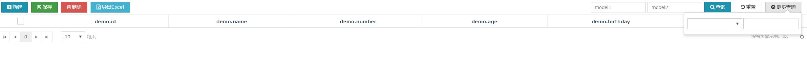

Hap 开发基本流程¶
说明¶
本文展示了最基本的Hap开发流程，以完成数据的增删改查操作及结合Kendo UI完成前台数据展示，并对一些相关的概念 进行了简单的介绍。
后端开发¶
假设我们现在要对一张用户表进行CRUD操作。表名为“hap_quick_start_demo”。
DTO¶
@ExtensionAttribute(disable = true)
@Table(name = "hap_quick_start_demo")
@AdminConstraint
public class Demo extends BaseDTO {
public static final String FIELD_ID = "id";
public static final String FIELD_NAME = "name";
public static final String FIELD_NUMBER = "number";
public static final String FIELD_AGE = "age";
public static final String FIELD_BIRTHDAY = "birthday";
public static final String FIELD_DELETED_FLAG = "deletedFlag";
public interface DemoSimpleView {};
public interface DemoDetailView extends DemoSimpleView {};
@Id
@GeneratedValue
private Long id;
@Length(max = 50, message = "名字不可以超过50个字符")
@NotBlank
@Where
private String name;
@Length(max = 15, message = "工号不可以超过15个字符")
@NotBlank
@NumberNonexistent
@Where
private String number;
@Column
@Min(value = 1, message = "年龄不可以小于1")
private Integer age;
@Column
@Past(message = "生日必须为过去的时间")
private Date birthday;
@NumberTrueOrFalse
@Column(name = "is_deleted")
private Integer deletedFlag;
@JsonView(DemoSimpleView.class)
public Long getId() {
return id;
}
public void setId(Long id) {
this.id = id;
}
@JsonView(DemoSimpleView.class)
public String getName() {
return name;
}
public void setName(String name) {
this.name = name;
}
@JsonView(DemoSimpleView.class)
public String getNumber() {
return number;
}
public void setNumber(String number) {
this.number = number;
}
@JsonView(DemoDetailView.class)
public Integer getAge() {
return age;
}
public void setAge(Integer age) {
this.age = age;
}
@JsonView(DemoDetailView.class)
public Date getBirthday() {
return birthday;
}
public void setBirthday(Date birthday) {
this.birthday = birthday;
}
@JsonView(DemoDetailView.class)
public Integer getDeletedFlag() {
return deletedFlag;
}
public void setDeletedFlag(Integer deletedFlag) {
this.deletedFlag = deletedFlag;
}
}
常用注解¶
通用Mapper注解 详见通用Mapper文档
@NameStyle 应用于DTO类 默认将实体类字段按驼峰转下划线形式转换为表列名 userName -> user_name@ColumnType 与 @Column 类似@Version 实现乐观锁主键JPA注解
@Table 常用 必须 用于类 标示所对应的表@Column 常用 如果DTO字段名和表字段名不一致，可以用此字段表示@Transient 常用 注解非表内字段@Id 常用 必须 标示主键字段@GeneratedValue 常用 必须 配置如何生成主键 和@Id合用Hap注解
@ExtensionAttribute(disable = true) 常用 必须 用于类 弹性字段 默认启用弹性字段@Condition 配置Where查询 用于select selectOne方法- operator
=<><==>LIKE<>!=默认为= - autowarp 当operator为LIKE是有效 true ->
xx LIKE concat('%',concat(#{yy},'%'))false ->xx LIKE #{yy}默认为true - exclude 排除这个字段 默认为false
@Where 注解的comparison与 @Condition 的operator属性看起来相似，实际上他们的作用领域不一样，
@Condition 与select selectOne方法配套使用， @Where 与selectOptions配套使用
@MultiLanguage 标示多语言类@MultiLanguageField 标示多语言字段@Children 标示头行结构行list字段@JoinTable @JoinOn @JoinColumn 配套使用示例用法
@JoinTable(name = "companyJoin", target = "Company.class", type = JoinType.LEFT, on = {@JoinOn(joinField=Company.FIELD_COMPANY_ID)}) private Long companyId; @Transient @JoinColumn(name = "companyJoin", field = Company.FIELD_COMPANY_FULL_NAME) private String companyName;
要和 service.selectOptions, mapper.selectOptions 搭配使用
@JoinCode 关联快码示例用法
private String companyType; @Transient @JoinCode(code = "SYS.UNIT_TYPE", joinKey = FIELD_COMPANY_TYPE) private String companyTypeName;
code 指需要关联的快码代码，本例指用companyType的值与快码的值关联，将快码的含义赋值给companyTypeName，
需要和 service.selectOptions, mapper.selectOptions 搭配使用
@JoinCache 关联缓存- 示例用法
private String functionName;
private Long parentFunctionId;
@Transient
@JoinCache(joinKey = FIELD_PARENT_FUNCTION_ID, joinColumn = FIELD_FUNCTION_NAME,
cacheName = "function")
private String parentFunctionName;
在查询的时候会取redis的 hap:cache:function 目录查找, 用parentFunctionId取关联缓存数据的键，然后再从缓存数据的值中取出
functionName字段的值，填充到DTO的parentFunctionName字段。需要和 service.selectOptions, mapper.selectOptions 搭配使用
@JoinLov 关联LOV(TODO)@JoinTables (TODO)使用@Column的意义:【强制】表达是与否概念的字段，必须使用 is_xxx 的方式命名，数据类型是 unsigned tinyint 、 （1表示是， 0表示否）（参见:阿里Java开发规范-MySQL数据库-建表规约-1）
【强制】 POJO 类中布尔类型的变量，都不要加 is，否则部分框架解析会引起序列化错误。（参见:阿里Java开发规范-编程规约-命名风格-8）
JackSon注解
@JsonFormat(pattern="yyyy-MM-dd HH:mm", timezone="GMT+8") 可用于Date类型属性 方法 设置日期输出格式@JsonInclude(JsonInclude.Include.NON_NULL) 可用于类及属性 不返回为Null的字段@JsonIgnore 可用于属性及方法 忽略改字段@JsonIgnoreProperties 与JsonIgnore相似 用于类上@JsonIgnoreType 可用于类 当其他类有该类作为属性时，该属性将被忽略@JsonProperty 可用于属性 可以指定某个属性和json映射的名称@JsonIgnore 可用于属性及方法 忽略该字段- 仅在序列化时生效的注解
@JsonPropertyOrder 序列化时字段顺序@JsonInclude 指定序列化的条件ALWAYS 默认 NON_NULL 属性为空 不序列化 NON_ABSENT NON_EMPTY 属性为null,字符串length为0，集合大小为0 不序列化 NON_DEFAULT 属性为默认值不序列化 USE_DEFAULTS
- 仅在反序列化时生效的注解
@JsonSetter 标注于setter方法上 可以解决json键和字段名名不匹配的问题Spring注解
@DateTimeFormat(pattern="yyyy-MM-dd") 设置从前端接收时间字符串的解析格式其他注解将在后续内容进行讲解
Controller¶
Controller 层主要有3个功能：数据校验 调用Service 数据返回处理 以完成CRUD操作
基本用法¶
@RestController
public class DemoController extends BaseController {
@Autowired
private DemoService service;
@PostMapping(value = "/hap/demo/query")
@JsonView(Demo.DemoDetailView.class)
public ResponseData query(Demo dto, @RequestParam(defaultValue = DEFAULT_PAGE) int page,
@RequestParam(defaultValue = DEFAULT_PAGE_SIZE) int pageSize, HttpServletRequest request) {
IRequest requestContext = createRequestContext(request);
return new ResponseData(service.select(requestContext, dto, page, pageSize));
}
@PostMapping(value = "/hap/demo/querySimple")
@JsonView(Demo.DemoSimpleView.class)
public ResponseData querySimple(Demo dto, @RequestParam(defaultValue = DEFAULT_PAGE) int page,
@RequestParam(defaultValue = DEFAULT_PAGE_SIZE) int pageSize, HttpServletRequest request) {
IRequest requestContext = createRequestContext(request);
return new ResponseData(service.select(requestContext, dto, page, pageSize));
}
@PostMapping(value = "/hap/demo/submit")
public ResponseData update(@RequestBody List<Demo> dto, BindingResult result, HttpServletRequest request) {
getValidator().validate(dto, result);
if (result.hasErrors()) {
ResponseData responseData = new ResponseData(false);
responseData.setMessage(getErrorMessage(result, request));
return responseData;
}
IRequest requestCtx = createRequestContext(request);
return new ResponseData(service.batchUpdate(requestCtx, dto));
}
@PostMapping(value = "/hap/demo/remove")
public ResponseData delete(HttpServletRequest request, @RequestBody List<Demo> dto) {
service.batchDelete(dto);
return new ResponseData();
}
}
BaseController¶
如示例代码所示，DemoController通过继承BaseController获得Hap内置的 一些功能特性，比如Token的校验、校验失败信息的处理、国际化等。
属性¶
DEFAULT_PAGE 默认起始页面DEFAULT_PAGE_SIZE 默认页面大小SYS_VALIDATION_PREFIX 系统校验前缀DEFAULT_VIEW_HOME 默认视图根目录方法¶
String getViewPath() 获取视图根目录IRequest createRequestContext(HttpServletRequest request) 常用 从HttpSession或者 SecurityContext
中获取UserId / RoleId / UserName / CompanyId /Locale / EmployeeCode / AllRoleId 等信息，封装进IRequest对象void checkToken(HttpServletRequest request, Collection<? extends BaseDTO> dtos) throws TokenException
进行Token校验Object exceptionHandler(Exception exception, HttpServletRequest request) 处理控制层异常，以 ResponseData 封装 或者 ModelAndView 返回Validator getValidator() 获取校验器 常与getErrorMessage配合使用String getErrorMessage(Errors errors, HttpServletRequest request) 常用 获取标准校验失败信息Long getUserId(HttpServletRequest request) 获取用户IDLong getRoleId(HttpServletRequest request) 获取角色IDString getLanguage(HttpServletRequest request) 获取语言编码后端数据校验¶
Hibernate 校验¶
| 注解 | 含义 |
| @CreditCardNumber(ignoreNonDigitCharacters) | 字符串必须是信用卡号(按美国标准校验) |
| @EAN | 检查是否为欧洲商品编码 |
| 字符串必须是email | |
| @Length(min=,max=) | 检查字符串长度 |
| @LuhnCheck | 信用卡号校验（模10校验） |
| @Mod10Check | 模10校验 |
| @Mod11Check | 模11校验 |
| @NotBlank | 只用于String,不能为null且trim()之后size>0 |
| @NotEmpty | 字符串不为null,集合有元素 |
| @ParameterScriptAssert | |
| @Range(min=, max=) | 数字必须大于min,小于等于max |
| @SafeHtml | 字符串必须是安全的html |
| @ScriptAssert | 用脚本进行校验 |
| @URL | 字符串是合法的URL |
Javax.validation 校验¶
| 注解 | 含义 |
| @AssertFalse | 值必须为false |
| @AssertTrue | 值必须为true |
| @DecimalMax(value=,inclusive=) | 值必须小于等于(inclusive=true)/小于(inclusive=false)value属性指定值，可以注解在字符串类型的属性上 |
| @DecimalMin(value=,inclusive=) | 值必须大于等于(inclusive=true)/大于(inclusive=false)value属性指定值，可以注解在字符串类型的属性上 |
| @Digits(integer=,fraction=) | 数字格式检查，integer指定整数部分的最大长度，fraction指定小数部分最大长度 |
| @Future | 值必须是未来的日期 |
| @Max(value=) | 值必须小于等于value指定的值，不能注解在字符串类型的注解上 |
| @Min(value=) | 值必须大于等于value指定的值，不能注解在字符串类型的注解上 |
| @NotNull | 不能为null，字符串可以为”“,集合的元素数量可以为0 |
| @Null | 值必须为空 |
| @Past | 值必须是过去的日期 |
| @Pattern(regex=) | 字符串必须匹配正则表达式 |
| @Size(min=, max) | 集合的元素数量必须在min和max之间 |
注解
所有的注解均可通过修改message属性来自定义校验失败返回消息
eg: @Min(value = 1, message = "年龄不可以小于1")
自定义校验¶
实现自定义检验，要创建一个注解以及一个检验类 假如，我们有以下需求：deletedFlag字段传入的值必须为0和1，就得在deletedFlag字段上添加 自定义的校验注解。自定义校验注解及校验类最好用public,即用单独的类，不然当手动校验时会出现 问题。
注解
@Target({ElementType.FIELD})
@Retention(RetentionPolicy.RUNTIME)
@Constraint(validatedBy = NumberTrueOrFalseValidator.class)
public @interface NumberTrueOrFalse {
String message() default "值必须为0或者1";
Class<?>[] groups() default { };
Class<? extends Payload>[] payload() default { };
}
特别注意注解的元注解 @Target({ElementType.FIELD}) 表示这个注解只能用在属性上， @Constraint(validatedBy = NumberTrueOrFalseValidator.class)
表示这个注解的校验类为 NumberTrueOrFalseValidator.class，因此我们需要实现这个类:
校验类
public class NumberTrueOrFalseValidator implements ConstraintValidator<NumberTrueOrFalse, Integer> {
@Override
public void initialize(NumberTrueOrFalse constraintAnnotation) {
}
@Override
public boolean isValid(Integer value, ConstraintValidatorContext context) {
return "0".equals(value.toString()) || "1".equals(value.toString());
}
}
校验类通过继承 ConstraintValidator 实现校验功能。
校验类中可以注入Mapper,Service做一些其他更为复杂的校验，比如说检验一个值在数据库存不存在等等。
除此以外，如果我们有下面的需求：如果用户为管理员，是不可以删除的。该怎么实现呢？在上个示例中，
注解标注在DTO的属性上，只能获取该属性即一个Integer的值，这不能满足我们的需求，因此需要做一点点改变。
注解
@Target({ElementType.TYPE})
@Retention(RetentionPolicy.RUNTIME)
@Constraint(validatedBy = AdminConstraintValidator.class)
public @interface AdminConstraint {
String message() default "不可以删除管理员";
Class<?>[] groups() default { };
Class<? extends Payload>[] payload() default { };
}
注意 @Target({ElementType.TYPE}) 表示注解用在类上。
校验类
public class AdminConstraintValidator implements ConstraintValidator<AdminConstraint, Demo> {
@Override
public void initialize(AdminConstraint constraintAnnotation) {
}
@Override
public boolean isValid(Demo value, ConstraintValidatorContext context) {
if (StringUtils.equalsIgnoreCase("admin", value.getName()) && 1 == value.getDeletedFlag()) {
return false;
}
return true;
}
}
校验类中 isValid() 方法可以获取到Demo对象，因此可以同时获取到 name 和 deletedFlag 字段，完成关联校验。
手动校验¶
校验注解和校验类可以写在DTO内，但是强烈不建议这样做，因为手动校验时会出现 java.lang.IllegalAccessException,
不能初始化校验类。
手动调用校验主要用于不是从Grid接收的数据，比如说从Excel数据，在将Excel数据转换为DTO类后，就可以手动来调用 校验逻辑。
使用示例
Validator validator = Validation.buildDefaultValidatorFactory().getValidator();
Set<ConstraintViolation<Demo>> set = validator.validate(dto, Default.class);
if (CollectionUtils.isNotEmpty(set)) {
Map<String, String> errorMsg = new HashMap<>();
for (ConstraintViolation<Demo> cv : set) {
errorMsg.put(cv.getPropertyPath().toString(), cv.getMessage());
}
}
cv.getPropertyPath().toString() 获取校验失败的属性名，如果为关联校验，比如注解在DTO类上的，此时获取的值为空字符串 cv.getMessage() 获取校验失败消息
数据返回处理¶
某些需求要求我们对同一个DTO返回不同的字段，比如说返回的简单视图只需要包括姓名，ID和工号，
详细视图要求我们在简单视图的基础上添加生日等信息，使用 @JsonView 注解就可以实现我们
的需求
如 DTO部分所示，在Demo类中声明两个接口，分别为DemoSimpleView和DemoDetailView，其中
DemoDetailView继承DemoSimpleView。
在需要简单视图上输出字段的getter方法上用 @JsonView(DemoSimpleView.class) 标示，同理需要在
详细视图上输出的字段的getter方法上用 @JsonView(DemoDetailView.class) 标示。
用法
如 Controller部分所示，在需要输出详细视图的查询方法
上用 @JsonView(DemoDetailView.class) 标示，在需要输出简单视图的查询方法上用 @JsonView(DemoSimpleView.class) 标示。
Service¶
基本用法¶
public interface DemoService extends IBaseService<Demo>, ProxySelf<DemoService> {}
通过继承 IBaseService, DemoService获得以下13个方法，可以分为以下四组:
较常规方法
T insert(IRequest request, @StdWho T record) 插入单条数据并同时插入who字段int deleteByPrimaryKey(T record) 根据主键删除T updateByPrimaryKey(IRequest request, @StdWho T record) 根据主键更新，同时更新who字段T selectByPrimaryKey(IRequest request, T record) 根据主键查询List<T> selectAll(IRequest iRequest) 查询全部List<T> select(IRequest request, T condition, int pageNum, int pageSize) 条件查询分页查询批量方法
List<T> batchUpdate(IRequest request, @StdWho List<T> list) 批量更新并同时更新who字段int batchDelete(List<T> list) 批量删除Selective方法
T insertSelective(IRequest request, @StdWho T record)T updateByPrimaryKeySelective(IRequest request, @StdWho T record)insertSelective与insert方法的区别在于，insertSelective方法不会把null插入到数据库。举个例子，如果数据 库的age字段默认值为20，DTO的age字段值为null，用insertSelective方法生成的sql不会包含age字段，因此数据库 将使用默认值。如果用insert方法，生成的sql会包含age字段，值为null，此时插入数据库可能会抛异常。
Options方法
List<T> selectOptions(IRequest request, T record, Criteria criteria)List<T> selectOptions(IRequest request, T record, Criteria criteria, Integer pageNum, Integer pageSize)T updateByPrimaryKeyOptions(IRequest request, @StdWho T record,Criteria criteria)使用这3个方法在于理解 Criteria 类,
- 属性
private List<Selection> selectFields 可用于selectOptions，设置查询字段private List<SortField> sortFields 可用于selectOptions, 设置排序字段private List<WhereField> whereFields 可用于selectOptions,设置条件字段private List<String> excludeSelectFields 可用于selectOptions,设置不查询字段private List<String> updateFields 可用于updatePrimaryKeyOptions,设置更新字段- 方法
Criteria sort(String field, SortType sortType) 设置排序字段Criteria select(String... fields) 设置查询字段Criteria selectExtensionAttribute() 设置查询扩展字段Criteria unSelect(String... fields) 设置不查询字段Criteria where(Object... fields) 设置条件字段Criteria where(WhereField... fields) 设置条件字段Criteria where(String... fields) 设置条件字段void update(String... fields) 设置更新字段void updateExtensionAttribute() 设置更新扩展字段使用options系列方法需要把所有select的主表字段用@Column标注，where的主表字段 用@Where标注。
- 用法示例
更新用户名/工号
public Demo update(IRequest request, Demo demo) throws BaseException {
Criteria criteria = new Criteria(demo);
criteria.update(Demo.FIELD_NAME, Demo.FIELD_NUMBER);
return super.updateByPrimaryKeyOptions(request, demo, criteria);
}
查询用户名/工号(用户名包括’A’的)，并根据年龄增序排序
public List<Demo> select(IRequest request, Demo demo) throws BaseException {
demo.setName("A");
Criteria criteria = new Criteria(demo);
criteria.select(Demo.FIELD_NAME, Demo.FIELD_NUMBER).where();
criteria.where(Demo.FIELD_NAME, new WhereField(Role.FIELD_ROLE_CODE, Comparison.LIKE));
criteria.sort(Demo.FIELD_AGE, SortType.ASC);
return super.selectOptions(request, demo, criteria);
}
Mapper¶
TODO
前端开发¶
前端开发的核心在于CSS HTML JS的分离以及模块化，以提高可维护性。
模板¶
效果¶
<script src='${base.contextPath}/common/code?yesOrNo=SYS.YES_NO&alignType=SYS.ALIGN_TYPE'></script>
<style>
/* 此处统一设置内部样式 */
#queryPanel {
margin-right: 5px;
}
#queryDetail > .row > input: {
width: 150px;
}
#queryDetail > .row > input:first-child {
margin-right: 5px;
}
</style>
<body>
<div id="grid"></div>
<!-- 工具组模块 -->
<script id="toolbar" type="text/x-kendo-template">
<div class="pull-left">
<span data-bind='click:create' class='btn btn-primary k-grid-add'><i
class='fa fa-plus-square'></i>新建</span>
<span data-bind='click:save' class='btn btn-success k-grid-save-changes'><i
class='fa fa-save'></i>保存</span>
<span class='btn btn-danger k-grid-remove'><i
class='fa fa-trash-o''></i>删除</span>
<span data-bind='click:exportExcel' class='btn btn-info k-grid-excel'><i
class='fa fa-file-excel-o' '></i>导出Excel</span>
</div>
</script>
<!-- 查询面板模板 -->
<script id="query" type="text/x-kendo-template">
<div class="pull-right" id="queryPanel">
<div class="k-query-simple">
<input data-bind="value:model.model1" id="model1" title="model1" placeholder="model1" class="k-textbox"
style="margin-right: 5px"/>
<input data-bind="value:model.model2" id="model2" title="model2" placeholder="model2" class="k-textbox"/>
</div>
<div class="k-query-detail" id="queryDetail">
<div class="row" style="margin-bottom:5px">
<input data-bind="value:model.model3" id="model3" title="model3"/>
<input data-bind="value:model.model4" id="model4" title="model4" class="k-textbox"/>
</div>
</div>
</div>
</script>
<script type="text/javascript">
$(document).ready(function () {
// 必须声明为全局变量否则Hap.createGridDataSource无法读到
window.viewModel = Hap.createGridViewModel('#grid', {
model: {
// 此处存放自己其他组件委托viewModel保存的数据
},
initializeData: function () {
// 在这初始化需要的数据
},
prepareComponents: function () {
// 在这儿初始化组件
// 给查询模板，自动生成查询及重置按扭 在grid初始化后调用
$('#queryPanel').kendoQueryPanel({
queryFunction: function () {
viewModel.query();
},
resetFunction: function () {
viewModel.reset();
}
});
// Grid的toolbar组件不支持remove操作，需写自定义函数 仅支持cancel-取消 create-创建 save-保存, excel-导出excel pdf-导出pdf
$('.k-grid-remove').click(function () {
viewModel.remove();
});
$('#model3').kendoDropDownList({
optionLabel: '是否',
dataTextField: 'meaning',
dataValueField: 'value',
valuePrimitive: true,
dataSource: yesOrNo
});
}
});
var dataSourceConfig = {};
dataSourceConfig.url = _basePath + '/hap/demo/';
dataSourceConfig.pageSize = 10;
dataSourceConfig.model = kendo.data.Model.define({
id: 'id',
fields: {
id: {
type: 'number',
editable: false,
},
name: {
type: 'string',
editable: true,
},
number: {
type: 'string',
validation: {
required: true
}
},
age: {
type: 'number'
},
birthday: {
type: 'date'
},
deletedFlag: {
type: 'number'
}
}
});
var dataSource = Hap.createGridDataSource(dataSourceConfig);
var grid = $('#grid').kendoGrid({
columns: [
{
field: 'id',
title: '<@spring.message "demo.id"/>',
width: 120,
headerAttributes: {
'class': 'table-header-cell',
style: 'text-align: center'
},
attributes: {style: 'text-align:center'},
},
{
field: 'name',
title: '<@spring.message "demo.name"/>',
width: 120,
headerAttributes: {
'class': 'table-header-cell',
style: 'text-align: center'
},
attributes: {style: 'text-align:center'},
},
{
field: 'number',
title: '<@spring.message "demo.number"/>',
width: 120,
headerAttributes: {
'class': 'table-header-cell',
style: 'text-align: center'
},
attributes: {style: 'text-align:center'},
},
{
field: 'age',
title: '<@spring.message "demo.age"/>',
width: 120,
headerAttributes: {
'class': 'table-header-cell',
style: 'text-align: center'
},
attributes: {style: 'text-align:center'},
},
{
field: 'birthday',
title: '<@spring.message "demo.birthday"/>',
width: 120,
headerAttributes: {
'class': 'table-header-cell',
style: 'text-align: center'
},
attributes: {style: 'text-align:center'},
},
{
field: 'deletedFlag',
title: '<@spring.message "demo.deletedFlag"/>',
width: 120,
headerAttributes: {
'class': 'table-header-cell',
style: 'text-align: center'
},
attributes: {style: 'text-align:center'},
},
],
dataBound: function () {
if (parent.autoResizeIframe) {
parent.autoResizeIframe('${RequestParameters.functionCode!}')
}
},
dataSource: dataSource,
editable: true,
navigatable: false,
pageable: {
buttonCount: 5,
pageSizes: [5, 10, 20, 50, 'all'],
refresh: true,
},
resizable: true,
scrollable: true,
selectable: 'multiple, rowbox',
toolbar: [
// 引入工具条
{
template: kendo.template($('#toolbar').html())
},
// 引入条件查询面板模板
{
template: kendo.template($('#query').html())
}
],
}).data('kendoGrid');
// 初始化数据 如果组件依赖于初始数据，务必在初始化组件之前初始化数据
viewModel.initializeData();
// 初始化kendo组件
viewModel.prepareComponents();
// 初始化查询面板键盘查询
Hap.initEnterQuery('#query-form', viewModel.query);
kendo.bind(grid, viewModel);
// 条件查询详细查询需重新绑定，上一步没绑定上，尚不清楚原因
kendo.bind($('#queryDetail'), viewModel);
});
</script>
</body>
</html>
快码引入¶
引入多个快码用 & 连接，避免多次发送Http请求带来的性能损耗。如下所示:
<script src=/'${base.contextPath}/common/code?yesOrNo=SYS.YES_NO&alignType=SYS.ALIGN_TYPE'></script>
模块化¶
- 一个普通的 Kendo Grid 一般需要一个工具组组件和一个条件查询组件。可以用 Kendo Template 封装，然后在Grid中引入。核心的 html元素一个div标签足够
- JavaScript 代码建议写到一起，用一个Script包裹，放在
body结束标签之前 - CSS 代码不能要html杂糅在一起(封装的组件除外)，放在
body起始标签之前
注意
Grid的toolbar组件不支持remove操作，需写自定义函数 仅支持cancel-取消 create-创建 save-保存, excel-导出excel pdf-导出pdf Grid API 参考
DataSource¶
var dataSourceConfig = {};
dataSourceConfig.url = _basePath + '/hap/demo/';
dataSourceConfig.pageSize = 10;
dataSourceConfig.model = kendo.data.Model.define({
id: 'id',
fields: {
id: {
type: 'number',
editable: false,
},
name: {
type: 'string',
editable: true,
},
number: {
type: 'string',
validation: {
required: true
}
},
age: {
type: 'number'
},
birthday: {
type: 'date'
},
deletedFlag: {
type: 'number'
}
}
});
var dataSource = Hap.createGridDataSource(dataSourceConfig);
前端数据校验¶
前端的数据校验在DataSource中的Model中完成。 在model-fileds-[property]中
- editable 指定是否可以编辑，默认为true
- type 指定字段类型 可选{number|string|boolean|date} 默认为string
- nullable 如果为true,将不会设置默认值
- defaultValue 指定默认值
- validation 指定校验规则 对象形式，可以指定是否必输，以及最大、最小值
自定义校验逻辑¶
在简单的校验不能满足需求时，可以考虑通过dataSource的change事件实现自定义校验。
dataSource.bind('change', function (e) {
// 数据条目
var item = e.items[0];
// change 类型
var action = e.action;
if (item == null) return;
// 获取属性值
var name = item.name == null ? '' : item.name;
var age = item.age == null ? 0 : item.age;
var uid = item.uid;
if (action != null && action === 'itemchange') {
if (age < 0) {
kendo.ui.showInfoDialog({
message: '年龄值不可以小于1'
}).done(function (f) {
// 可以重设值
e.sender.getByUid(uid).set(e.field, 0);
// 更新UI
$('#grid').data('kendoGrid').refresh();
});
}
}
});
通过e.item[0]获取数据条目，e.field获取被修改的字段，e.action获取事件类型，编辑值时的事件代码为itemChange。 如果校验失败，可以通过e.sender.getByUid(e.item[0].uid).set()来重设字段值。另外可以借助Grid的refresh方法实现 UI的更新。Grid API 参考
自定义单元格展示模板及编辑器¶
展示模板¶
在 grid.columns.template 中配置
配置展示样式(强调)
columns: [ {
field: 'name',
template: function(dataItem) {
return '<strong>' + dataItem.name + '</strong>';
}
}],
配置展示格式(小数千分位形式)
columns: [ {
field: 'name',
template: function(dataItem) {
return ("" + dataItem.total).replace(/(\d{1,3})(?=(\d{3})+(?:$|\.))/g, "$1,");;
}
}],
常用编辑器¶
在 grid.columns.editor 中配置
多语言¶
editor: function (container, options) {
$('<input required name= "' + options.field + '" />')
.appendTo(container)
.kendoTLEdit({
idField: 'unitId',
field: 'name',
dto: "com.hand.hap.hr.dto.HrOrgUnit",
model: options.model
});
}
DropDownList¶
editor: function (container, options) {
$('<input required name="' + options.field + '"/>')
.appendTo(container)
.kendoDropDownList({
dataTextField: 'meaning',
dataValueField: 'value',
valuePrimitive: true,
dataSource: profileLevelData,
select: function(e) {
options.model.set('levelValue', null);
options.model.set('levelName', null);
}
});
}
DatePicker¶
editor: function (container, options) {
var end = options.model.endActiveDate;
var opts = {
format: "yyyy-MM-dd"
};
if (end) {
opts.max = end;
}
$('<input name="' + options.field + '"/>')
.appendTo(container)
.kendoDatePicker(opts);
},
注解
此例子也展示了如何获取同条记录的不同字段值，如 options.model.endActiveDate，在这个例子中
获取结束有效时间来设置开始有效时间的最大值。
LOV¶
editor: function (container, options) {
$('<input name="' + options.field + '"/>')
.appendTo(container)
.kendoLov($.extend(<@lov "LOV_UNIT"/>, {
query: function (e) {
e.param['enabledFlag'] = 'Y'
},
textField: 'parentName',
model: options.model,
select: function(e){
options.model.set('parentCode', e.item.unitCode)
}
}));
}
ViewModel¶
viewModel 用于做和页面数据的双向绑定，同时可以存放一些自定义的函数。比如完成组件初始化的函数- prepareComponnents()
其他¶
- Hap 框架上的某些功能不能满足需求
可以考虑重写框架的代码，页面、Java代码、配置文件均可以，只需保证重写的代码文件与原文件 在路径上保持一致，重写的代码文件在编译时将有更高的优先级。
- Hap引入Kendo UI版本落后于最新版本，可能会出现于API的不一致的行为